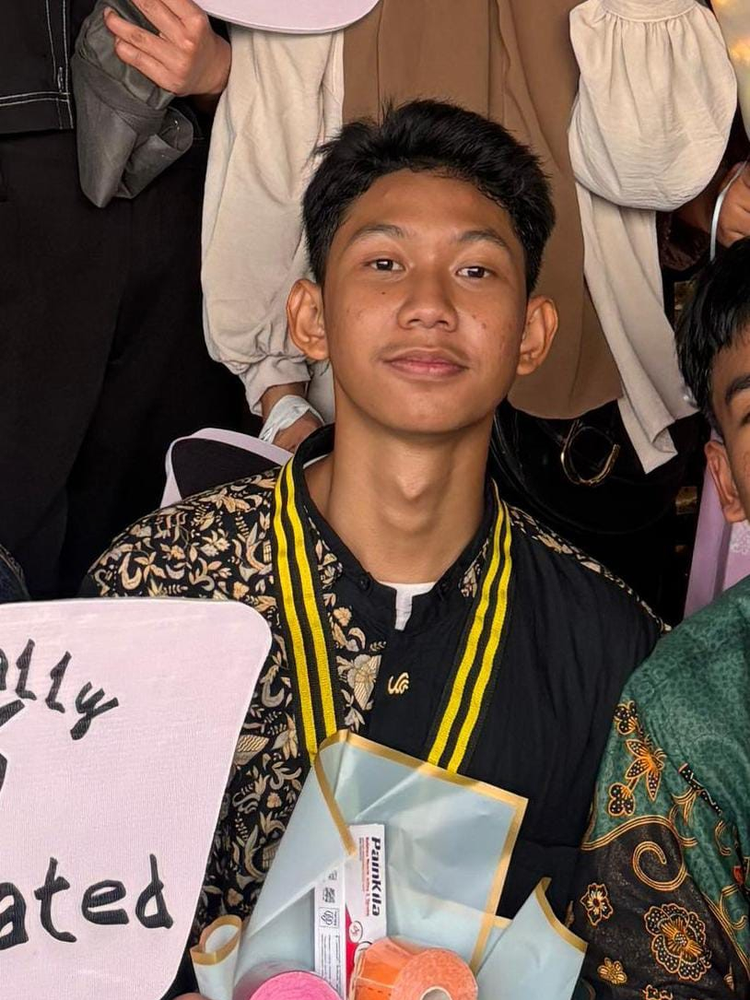

Siswa SMK Jurusan SIJA

↓ Scroll ke bawah ↓
Hola! Saya Alif, siswa kelas X jurusan SIJA di SMK NEGERI 26 JAKARTA. Ketertarikan saya pada dunia IT berawal dari rasa penasaran terhadap cara kerja teknologi modern, mulai dari jaringan internet, perangkat komputer, hingga berbagai web dan aplikasi digital. Selain itu, luas dan beragamnya peluang karier yang menjanjikan di industri teknologi semakin memotivasi saya untuk terus berkembang di bidang ini.
Saat ini, saya sedang fokus mengulik seputar Web Development dengan target utama dapat menguasai teknologi pengembangan web secara mendalam. Musik & Lagu adalah teman wajib saya di hampir setiap kegiatan. Di luar aktivitas di depan layar, saya menyalurkan energi lewat berbagai olahraga yang salah satunya berlari serta berlatih Pencak Silat yang sudah saya tekuni selama beberapa tahun.
Jurusan Sistem Informatika, Jaringan, dan Aplikasi
"Kekuatan Terbesar Dari Seorang Manusia Adalah Pikirannya Sendiri"